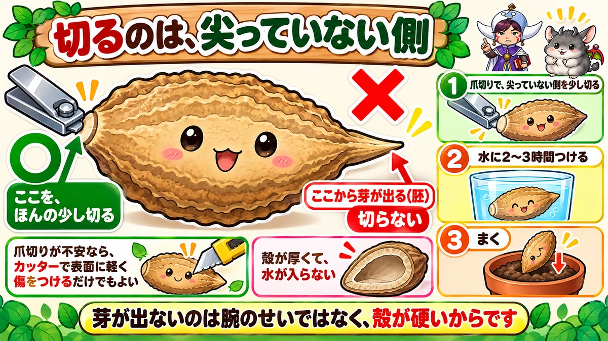
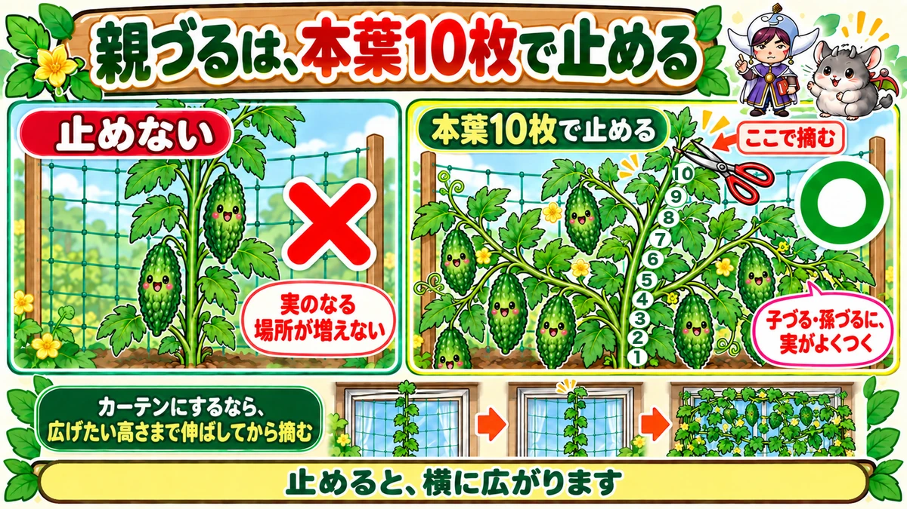
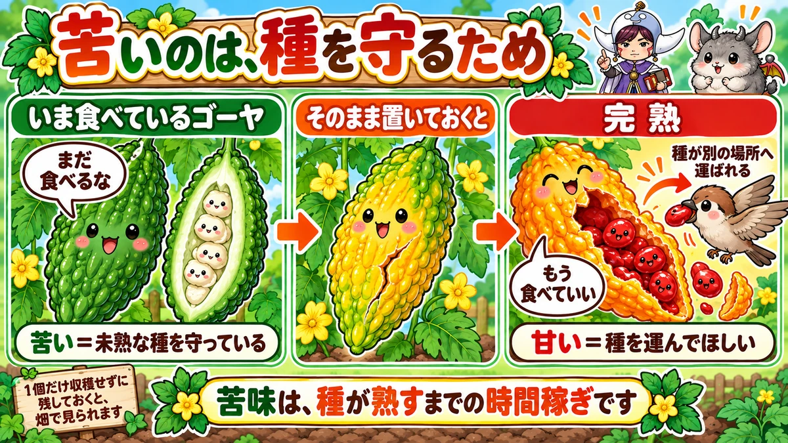

ゴーヤの育て方｜芽出し・摘心・水やりと実が少ないときの確認順
🌿「まいたのに、なかなか芽が出ない」
🌿「出ても、そこからちっとも大きくならない」
🌿「収穫し忘れたら、黄色くなって割れていた」
どうも、8150（えいこう）です🌱 家庭菜園歴8年、理科の教員免許を持っていて、有機・無農薬で野菜を育てています。
前回はズッキーニでした。今日はゴーヤです。
先に、この記事でいちばん言いたいことを言っておきますね。
ゴーヤは、発芽でほとんど決まります。
そして芽が出ないのは、みなさんの腕のせいではありません。殻が硬いんです。爪切りが1本あれば解決します🌿
まず、ゴーヤの基本データ
3つだけ押さえてください
- 科：ウリ科（きゅうり・かぼちゃ・ズッキーニの仲間。同じ場所は2〜3年あける）
- タネまき：5月に入ってから（直まきなら5月中旬以降）
- 植え付け：5月下旬〜6月
※時期は中間地（関東〜関西の平野部）が目安。寒い地域は少し遅らせ、暖かい地域は早めに。
📖 この記事の目次
この記事で分かること
- 種から育てる場合は、殻に小さな水の入口を作り、発芽に合う暖かさを確保します。
- 実を収穫したいのか、窓に日陰を作りたいのかを先に決めると、ネットと摘心の計画が立てやすくなります。
- 摘心する本葉の数は6〜10枚ほどと説明に幅があります。緑のカーテンでは、横へ広げたい高さも判断に入れます。
- 水やりは小苗のころのままにせず、葉の増え方と土の乾きに合わせて見直します。
- 実が少ないときは、季節、つるの分かれ方、肥料、極端な暑さを確認。追肥を最初の答えにしません。
- 夏の管理から秋の撤去まで、観察する場所と作業の順番を分けて整理します。
ゴーヤは、芽を待っている間と、つるが広がってからで、ずいぶん印象が変わる野菜です。最初は「まだですか…」と待たされるのに、暖かくなるとネットの空き場所をどんどん使っていきます。ゆっくりな時期と、よく伸びる時期を同じ基準で見ると、焦って肥料を足したり、植え足したりしやすいんですよね。
このページでは、ゴーヤを育てる作業を時期順に並べ、途中で困ったときは症状から確認できるようにしました。初めてなら『早見』から、すでに栽培中なら『失敗の見分け方』から読んでください。必要な章へ戻って使う、家庭菜園の調べ物ページです🌱
私は8150（えいこう）です。栽培の数字を暗記するより、目の前の株を見て「次は何をするか」が分かる形を大切にしています。たとえば本葉の枚数だけでなく、どこから横へ広げたいかを見る。水やりの回数だけでなく、前回より葉が増えたかを見る。そんなふうに、数字と実物をつないでいきましょう。
早見：ゴーヤの育て方（ひと目で分かる数字）
準備・芽出し・植え付けの目安
- タネまき：暖かくなる5月が基本の目安です。畑へ直接まく説明では5月中旬以降。早めに始めるなら、冷たい地面へ急いでまくより、暖かい場所で育苗する段取りにします。
- 苗の植え時：5〜6月を適期とする説明があります。6〜7月に始める例もあり、5月を過ぎたら栽培できないという意味ではありません。
- 地域差：暦より暖かさを優先します。冷え込みの残る地域で、暖かい地域の開始日だけをまねしません。極端な暑さが早く来る地域では、その前に株を育てることも考えます。
- 発芽と生育に合う温度：25〜30℃という説明があります。約30℃を生育の目安とする説明もありますが、35℃近い暑さが続く場合まで『暑いほど順調』とは扱いません。
- 芽出しの吸水時間：種の尖っていない端の殻へ小さな傷を作り、水に2〜3時間浸す方法があります。この時間は芽が出るまでの日数ではありません。
- 元肥の準備：植える約1か月前から土を準備する説明があります。元肥を入れる方法と、控えめに始めてあとで補う方法があるので、違う方法の配合を足し合わせません。
- 株間：今回の材料には、共通して使える数値がありません。育てる品種の表示と、つるを広げるネットの範囲を確認して決めます。
- うね幅：一律の指定はありません。支柱を置く場所、つるを広げる向き、見回りの通路を含めて計画します。
- 苗とネットの距離：約30cm離し、斜めの支柱で橋渡しする例があります。これは株同士の間隔ではありません。
- 容器の大きさ：40cm×60cmの容器や、60cm×70cm×深さ60cmの大型容器を使った例があります。最低容量や、一株に必要な土量を示す数字ではありません。
つる・水・肥料・収穫の目安
- 収穫重視の摘心：本葉6〜7枚と、本葉10枚ほどという説明があります。おおむね6〜10枚の範囲で差があり、全株を同じ日に切る基準にはしません。
- カーテン重視の摘心：覆いたい高さへ親づるが届いたところで先端を止め、横へ枝を広げる方法があります。窓の位置とネットの形が判断材料です。
- 子づるの本数：3〜4本を育てる方法と、摘心後はいったん自由に広げる方法があります。共通するのは親づる一本だけにせず、枝を育てることです。
- 孫づるの整理：7月の混んだ株で、一段残し、その次の段を間引く実演があります。月だけを理由にすべての株へ行う作業ではありません。
- 水やりの回数：朝一回を基本とする説明もありますが、容器や土、天候をそろえた共通基準ではありません。葉が増えたら土の乾きをこまめに見ます。
- 一回の水量：ゴーヤ一株に何Lという固定値は材料にありません。回数も量も、春の小苗と真夏のカーテンで同じにしません。
- 追肥の開始：植えて約1か月後から、約3週間おきに補う夏野菜共通の例があります。一方、葉が黄緑色になったら少量補うというゴーヤの管理例もあります。
- 追肥の位置：株元から30〜40cmほど離した場所へ施す例があります。製品をまたいで同じ量を使う基準ではありません。
- 実が増えやすい時期：日が短くなる7月後半〜9月という説明があります。季節を考える手がかりで、すべての品種がこの期間だけ実るという限定ではありません。
- 収穫までの日数：小さな実を見つけてから約3週間という例と、6月下旬〜7月に栽培を始めて2〜3か月という例があります。数え始めが違います。
- 秋の片付け：撤去の約1週間前に株元から約30cm残して切り、乾いた上のつるを約30cmずつに分けて外す方法があります。
- 連作の間隔：何年あけるかを直接裏付ける材料がありません。このページでは年数を決めず、前作と栽培中の異変を記録しておきます。
数字の前に、何の距離・何からの日数かを見る
『30cm』だけを覚えると、苗とネットの距離、追肥する位置、撤去で残す株元が頭の中で一緒になります。どれも近い数字ですが、作業の意味が違います。数字の横に『どこからどこまで』を添えて読むと、取り違えを減らせます。
日数も同じです。小さな実を見つけてからの3週間を、種をまいてからの3週間に置き換えると、予定がまるで変わります。記録には『種まき』『定植』『小さな実を確認』を別々に書いてください。あとから見返したとき、どの段階で時間がかかったかが分かります。
準備の確認は、このくらいからで十分です。
- 食用の収穫と日よけのどちらを優先するか決めた
- 種からか苗からかを決め、開始日の欄を分けた
- 品種の表示と、ネットを張れる範囲を確認した
- 土の乾きと排水を見られる場所を選んだ
- 日数は見回りの目安にし、実物も確認することにした
一度に全部そろえようとしなくて大丈夫です。まず『何を育てたいか』と『どこへ広げるか』を決めると、買うものや作業の順番が見えてきます。
作業の手順（時期の順）
1．使い道を決めて、品種と始め方を選ぶ
- 『苦味が穏やかな実を食べたい』『苦味のある実を楽しみたい』『窓を葉で覆いたい』のどれを優先するか決めます。
- 売り場の品種説明で、苦味、実の形、つるの伸び方を確認します。
- 種から育てるなら、芽出しと初期のゆっくりした生育の期間を予定に含めます。苗からなら、植える場所の準備を先に進めます。
- 品種名と開始日を記録し、収穫したい場所やネットの広さも一緒に残します。
ゴーヤはどれも同じ苦さ、と思っていると、品種選びが少しもったいないです。アバシー系は太く短い実で苦味が穏やか、レイシ系は細長く苦味が強めという違いがあります。白い実をつけるタイプにも、苦味が少ないと説明されるものがあります。苦さが心配なら、まず品種の説明から探してみると入口が広がります。
ただし『苦味が少ない』は、苦味を全く感じないという保証ではありません。白い実だから何でも同じ、太い実ならすべて同じ、という選び方にもせず、手元の商品に書かれた特徴を確認します。正式名を確認できない品種を、名前の似た別の商品へ置き換えることもしません。
日よけを優先するなら、食べたい実の形だけでなく、葉を広げたい範囲から選びます。窓の下だけ覆いたいのか、休憩場所の上に日陰を作りたいのかで、つるの進む向きが変わります。苗を植えてからネットの置き場所を探すより、先に完成した姿をざっくり描く方がラクです。
2．日当たり、排水、ネットの置き場所を確かめる
- 日の当たる場所を選び、雨のあとに水が残るか見ます。
- 地植えでは、水がたまり続けないうねに整えます。乾燥対策と、水の逃げ道を一緒に考えます。
- ネットの上側だけでなく下側も固定し、ゆるんだ部分を残さないようにします。
- 風で支柱が倒れたり、ネットが大きく動いたりしないか、苗を植える前に確認します。
- 見回り、誘引、収穫、秋の撤去で手を届かせられる場所を確保します。
ゴーヤは湿り気を必要としますが、水がいつまでも停滞する場所を選ぶわけではありません。根が浅いところへ広がる性質を考え、乾いたら補えることと、余った水が抜けることをセットにします。「乾かしたくないから排水をなくす」は、方向が逆になってしまいます。
ネットは、つるがつかまる場所です。最初にたるみを直しておくと、後の誘引や撤去も進めやすくなります。葉が茂ってから張り直すと、どこがひもでどこがつるなのか分かりにくくなるんですよね。空っぽのうちに整える、地味ですが効く準備です。
容器栽培では、根を広げられる大きめの容器を選ぶ方向で考えます。ただ、材料に出てくる大型容器の寸法を『これ未満では育たない』という最低ラインにはしません。容器の置き場所とネットの範囲をそろえ、小さな鉢から巨大なカーテンを作る計画に無理がないか見直します。
3．土と元肥は、植え付けから逆算して準備する
- 前作で何を入れたか、今の土をどう使ってきたかを確認します。
- 元肥を入れる方法なら、植える約1か月前から準備を進める説明を目安にします。
- 使う肥料の表示に沿い、複数の栽培法の量を重ねません。
- 植え付け直前に不足が気になっても、大量追加で帳尻を合わせる計画にしません。
- 植えてからの追肥は、葉の色と実つきも見て判断することにします。
元肥は、植える前に用意する肥料です。あとから補うものが追肥。名前は分けておくと便利ですが、『元肥はたっぷり、追肥もたっぷり』と足し算するものではありません。
土づくりを十分に行う説明と、初めの肥料を控えてあとで補う説明には、使う容器や土、肥料の違いがあります。見た目の作業量だけを比べて、熱心な方を採用する必要はありません。大事なのは、植える直前の大量投入を避け、育ち始めてからも株の様子を確かめることです。
このページでは、商品を組み合わせた配合表は置きません。材料の資材名や単位が不明瞭なところを、もっともらしい名前と量で埋めると、読者が再現する際に困ります。使う製品の表示と、その場所へすでに入れたものを照らし合わせてください。
4．種の殻へ小さな入口を作って吸水させる

- 種の形を見て、尖っている端と、それ以外の側を確かめます。
- 尖った端を傷つけないようにし、反対側の殻を爪切りでほんの少し削る方法を使います。
- 削った種を水へ入れ、2〜3時間ほど吸水させる方法があります。
- 発芽に合う暖かさを確保して、種まきへ進みます。
- 作業した日を記録し、『処理した日』と『芽を確認した日』を分けて残します。
ここで削りたいのは殻の一部です。中まで大きく切り取る作業ではありません。小さな種を見ていると、なんか細かい工作の気分になりますが、目的は水が入りやすくなること。それ以上の傷を作る必要はありません。
尖った側には、これから芽になる部分があります。向きが分からないまま端を大きく切るのは避けます。殻の表面を軽く傷つける方法もありますが、刃物を使う場合は種を持つ指の位置も確かめ、無理に勢いをつけません。
吸水時間を延ばせば延ばすほどよい、という話ではありません。2〜3時間は材料にある方法の目安です。そこから一晩、数日と自己流で延ばした手順を、このページのおすすめとしては足しません。種まきの深さや一か所の粒数も共通の裏付けがないため、手元の種袋の指示を確認して進めます。
5．暖かさを待ち、発芽後もすぐに植え足さない
- 早い時期に始める場合は、冷たい畑への直まきより、暖かい場所で苗を育てる方法を検討します。
- 畑へ直接まくなら、5月中旬以降という目安と、実際の暖かさを照らし合わせます。
- 芽が出たら、初期は動きがゆっくりだと考え、新しい葉やつるの変化を見ます。
- 『まだ小さい』だけを理由に、同じネットの足元へ別の苗を追加しません。
- 植え付けへ進むときは、これからつるを広げる場所まで空けておきます。
発芽した瞬間から、毎日ぐんぐん伸びるわけではありません。ゴーヤの初期生育は遅めです。ほかの野菜の伸び方を基準にすると「置いていかれてる？」と感じやすいですが、まずゴーヤ自身の新しい葉を見てください。
もちろん、何が起きても待てば大丈夫という意味ではありません。寒い、芽を傷めた、土が乾いているなど、確認する条件はあります。ただ、初期の遅さだけで失敗扱いすると、暖かくなったあとに伸びる場所が足りなくなることがあります。今の小ささと、夏に必要な広さを分けて考えます。
6．苗を植え、ネットまでの進路を作る
- 苗を植える位置と、ネットまでの距離を確認します。
- 苗の土の周囲に隙間が残らないように土を入れ、軽く押さえる植え付け例があります。
- ネットから離れている場合は、斜めの支柱を渡して進む方向を作ります。
- 小さなつるを風で振り回されないよう、ひもで軽く支えます。
- 伸びた先がネットへ向かっているか、葉やつるが無理に折れていないか見ます。
ネットから約30cm離して植える例は、苗とネットを橋渡しする説明です。何株も並べるときの株間とは区別してください。株数を決める際は、品種の表示とネット上の広がりを見ます。
植えた土の面を覆いの面より約1cm高くする実演もありますが、どの場所にも共通する深さの決まりではありません。実演の数字だけを取り出して、鉢でも畑でも同じように植える基準にはしません。
誘引とは、つるを伸ばしたい向きへ導く作業です。小苗にとっては、広いネットへ届くまでの道案内のようなもの。ネットは用意したけれど、そこまでの道がない、という状態をなくすと、そのあとの観察もしやすくなります。
7．目的に合わせて親づるを止める

- 苗から最初に伸びている親づるを、株元からたどります。
- 収穫重視なら、本葉6〜10枚ほどの幅があることを踏まえ、育ち方を見て先端を止める方法を選びます。
- カーテン重視なら、覆いたい高さへ届くまで伸ばしてから先端を止める方法を考えます。
- その後に伸びる子づるを、ネットの空いている方向へ広げます。
- 切った位置と日を記録し、どこから枝が伸びたか確認します。
先端を止めて枝を育てる作業が摘心です。つる全部を短くすることでも、葉をまとめて取り去ることでもありません。どのつるの、どこを止めるのかを先に確かめます。
図は、親づるから枝が広がる形を理解する助けにしてください。葉数については複数の説明があるので、図の数字だけを唯一の答えにしません。『説明が分かれていること』の章で、収穫と日よけの目的も合わせて整理しています。
ゴーヤは子づるの実つきがよいという性質があります。きゅうりもつるで育つからといって、覚えた整枝をそのまま持ち込まないでください。枝を増やしたい段階で、出てきた枝を片っ端から取ると、目指した広がりと反対へ進んでしまいます。
8．広がった枝を導き、混んだところだけ整理する
- つるを親づる、子づる、孫づるの順にたどり、分かれた場所を確認します。
- 子づるが伸びる段階では、ネットの空いた方へ進路を分けます。
- 長く垂れたつるは、折れたり伸びを妨げられたりしないよう、支えへ導きます。
- 葉と枝が重なって風が通りにくくなったら、混んだ孫づるを整理します。
- 切る前に、残す枝と実のある位置を確認します。
子づるを3〜4本育てる仕立てと、摘心後はしばらく自由に伸ばす管理があります。どちらも、親づる一本だけの状態を変えるための方法です。最初に横へ広げることと、夏に混雑をほどくことを、別の段階として考えると整理できます。
7月に混み合う孫づるを、一段残して次の一段を切るように間引く例があります。これは、すべての枝を消す指示ではありません。つるが少ない株まで同じ数だけ切らず、混み合った場所で通り道を戻すために使います。
太さだけで親子を決めるのは難しいです。子づると孫づるの太さが似ることもあるので、出発点までたどってください。『太い方を残す』だけで切り始めると、残したい枝を取り違えることがあります。はさみより先に、目と指で道順を確認する感じです。
9．葉が増えたら、水の確認も増やす
- 春の小苗と比べて、葉がどのくらい増えたか見ます。
- 土の表面の乾きと、葉の張りを確認します。
- 乾いている場合は水を補い、前の時期と同じ間隔で足りているか見直します。
- 容器と地植えを同じ回数にせず、それぞれの乾き方を確認します。
- 雨のあとにも、水がいつまでも残っていないか見ます。
葉は水を外へ出す働きをしているため、葉が増えれば水の使われ方も変わります。小苗で間に合った水やりが、ネットを覆う時期には追いつかなくなることがあります。葉の枚数を厳密に数えて計算しなくても、『前よりずいぶん茂った』と気づけば、見回りを増やす理由になります。
一方、葉が少し下がったからと、土を見ずに追加し続けることも避けます。水切れを防ぐのと、水をため続けるのは別の管理です。乾きやすい容器では確認をこまめにし、排水も保ちます。朝一回という目安だけで、容器の中まで安心し切らないでください。
10．追肥の前に、葉色と実つきを一緒に見る
- 葉がしっかり緑色か、黄緑に変わってきたか見ます。
- 葉だけがよく茂り、実が少ない状態になっていないか確認します。
- 元肥と、これまで追肥した時期を記録で確かめます。
- 補う必要がある場合は、使う肥料の表示を確認し、少量から判断する方法を取ります。
- 追加したあとも、葉の色だけでなく実つきを見続けます。
葉の黄緑色を肥料不足の目安にする管理があります。追肥位置を株元から30〜40cmほど離す例もありますが、量は製品をまたいで同じにはできません。材料の単位が不明瞭な数値を、正確な計量値として示すことは避けます。
『実が少ないので肥料を足す』という一手だけで進めないことが大切です。肥料が多くて葉ばかり育っている場合、追加が改善につながらないことがあります。つるの分かれ方、時期、暑さも確認し、何が足りないのかを先に考えます。
11．小さな実を見つけたら、収穫の見回りを始める
- 小さな実を見つけた日を記録します。
- その品種の実の形と、収穫の目安を確認します。
- 約3週間で収穫した例を見回りの参考にし、同じ日数での完成を約束しません。
- 極端な暑さが続く場合は、実が葉陰に入るようにし、状態の確認をこまめにします。
- 実の変化を見ながら収穫し、一つの長さだけで全部の品種を判断しません。
小さな実を見つけると、ゴールが近くなった感じがしますよね。ただ、細長い系統と太く短い系統に、同じ何cmという基準を置くと合いません。このページの材料には標準の収穫サイズがないため、品種の説明と実物を合わせて判断します。
35℃近い暑さが続く環境で、緑の実が早く柔らかく傷むという説明があります。その場合は実を葉の陰へ入れ、傷む前の収穫を意識する対策が示されています。季節の暑さと、極端な高温をひとまとめにして『ゴーヤなら平気』とは考えません。
ここで早めの収穫というのは、傷んだ実の利用をすすめる意味ではありません。硬さが変わった実や異変のある実は、日数だけで食用可否を決めません。色が変わった場合の扱いは、材料で説明できる範囲と、確認できていない範囲を分けておきます。
12．秋は、つるを乾かしてからネットを外す
- 収穫を終える時期を決め、まだ収穫したい株と区別します。
- 撤去の約1週間前に、株元から約30cmを残してつるを切る方法があります。
- 上のつるが乾くのを待ちます。切った日からの目安は約1週間です。
- ネットを張ったまま、乾いたつるを約30cmずつの短い部分に分けて外します。
- 誘引したひもも取り除き、ネットのひもを一緒に切らないようにします。
- 上部を片付けてから、最後に株元を抜きます。
生きたつるは、あちこちに絡んでいます。それを長いまま引っ張るより、乾かして短く分ける方が、ネットとの区別をつけやすくなります。来年も使いたいネットまで切ってしまうと、片付けが買い直しの準備になってしまいますからね💦
この方法は、栽培を終えると決めた株に使います。少し葉が黄色いからと、収穫中の株を先に切る作業ではありません。終了日と切断日を分け、残す株があるなら間違えないよう確認します。
ゴーヤのあとに何を植えるか、何年間隔をあけるかは、今回の材料だけでは決められません。栽培した場所、期間、病気の疑いがあったかを記録しておくところまで進め、次作の計画はその条件に合う情報で確認します。
失敗の見分け方（症状→原因→やること）
まいた種から芽が見えない
- 症状：種をまいた場所に変化がなく、発芽を確認できません。
- 考えられる原因：殻に水が入りにくい、発芽に必要な暖かさが足りない、処理時に芽になる側を傷めた、といった可能性があります。
- やること：種の処理、吸水、まいた時期と場所の暖かさを順に確認します。肥料を増やす作業から始めません。
確認は『殻をどう処理したか』『そのあと水に浸したか』『冷たい地面へまいていないか』に分けます。種が動き始める条件を確かめる作業です。尖った側を大きく切ってしまった場合は、同じ切り方で次の種も処理しないよう、向きを見直します。
材料には、何日で必ず発芽するという共通日数はありません。待つ日数を作って断定せず、手元の種袋にある発芽の目安と実際の温度を確認してください。芽が出ないことと、出た芽の生長が遅いことも、別の症状として扱います。
芽は出たのに、なかなか伸びない
- 症状：芽を確認したあと、葉やつるの増え方がゆっくりです。
- 考えられる原因：ゴーヤ本来の初期生育の遅さや、まだ十分に暖かくないことが考えられます。
- やること：新しい葉の変化を見て、初期の遅さだけで失敗と決めません。同じ場所へ苗を増やす前に、夏の広がりを確認します。
ここで比べる相手は、隣のトマトより『この株の前の姿』です。前回の写真と同じ角度で見れば、少しの葉の増え方も確認しやすくなります。派手に伸びない時期でも、生長している部分があるか見てください。
暖かい場所での育苗が役立つのは、冷たい畑へ早くまくことを避けられるからです。遅いからと肥料だけを増やすより、まず温度と時期を振り返ります。小さな株を見て大きな結論を急がない、という感じです。
葉は立派なのに、実が少ない
- 症状：ネットに葉が多く広がっている一方で、実をあまり確認できません。
- 考えられる原因：親づるばかりを伸ばしている、肥料が多い、実が増えやすい季節の前、極端な高温が続いている、といった可能性があります。
- やること：時期、つるの分かれ方、肥料の履歴、暑さの順に見ます。実が少ないという理由だけで追肥しません。
まず、まだ季節の早い段階なのかを確認します。日が短くなってから実つきがよくなる説明を、待つ判断の一つに使います。ただし、その説明だけで何も見なくてよいと決めず、親づるから子づるが広がっているかも見ます。
次に、これまで何をどのくらい足したかです。濃い葉がよく茂っているのに、追肥の日だけを見て追加するのは避けたいです。肥料が多い状態を『栄養不足』と取り違えると、次の作業が合いません。
暑さも確認項目です。約30℃に合うという話と、35℃近い日が連続する話は分けます。花や受粉の原因をすべて診断できる材料はないので、ここにない原因まで一つの症状で断定しません。
つるが重なり、実を探しにくい
- 症状：枝が幾重にも重なり、風の通り道やネットの空きが見えにくくなっています。
- 考えられる原因：孫づるまで広がり続け、同じ場所へ枝が集まっていることが考えられます。
- やること：つるを出発点までたどり、誘引で分けられるものと、混んだ孫づるで整理するものを分けます。
『ごちゃごちゃしているから上半分を切る』のように、場所だけで切り始めないでください。子づるを残したいのに、その途中を切ってしまうことがあります。一本ずつ親の枝へたどれば、どの枝を育てているか分かります。
枝を切る前に、空いている方向へ導けないかも見ます。ネットに空きがあるのに、つるが一か所へ垂れているなら、誘引で広がり方を変えられる場合があります。広がるための枝と、混雑を作る枝を見分ける作業です。
つるが下へ垂れ、ネットから離れている
- 症状：長いつるが支えを離れ、下へぶら下がっています。
- 考えられる原因：伸びた先の支えが足りない、伸ばしたい向きへ導けていない、といったことが考えられます。
- やること：折れないよう支えへ誘引し、ネットのたるみや固定も確認します。
小苗なら、苗からネットまでの橋渡しがあるかを見ます。大きな株なら、伸びた先に空きがあるかを見ます。同じ『届かない』でも、まだネットへ到達していない段階と、広がる場所を使い切った段階では、直す場所が違います。
ひもを追加すれば終わりにせず、つるが進める向きか、葉が重なるだけになっていないかを確かめます。支えることと、混雑を整理することを分けると、手を入れすぎずに済みます。
葉の色が黄緑になってきた
- 症状：前より葉の緑が薄くなり、黄緑に見えます。
- 考えられる原因：肥料不足の目安になることがあります。ただし、色だけで状態を確定できるわけではありません。
- やること：土の乾き、これまでの施肥、実つきを確認したうえで、必要なら少量の追肥を検討します。
材料には、葉が黄緑になったら補うというゴーヤの管理例があります。いま十分な緑色なのか、以前より薄くなったのかを見比べると判断しやすくなります。日付だけを理由に足す方法とは分けてください。
一枚だけの変化と、株全体の変化も書き分けて記録します。このページには黄化の原因を網羅した診断表がないため、『黄緑なら全部肥料不足』という答えにはしません。葉の色を手がかりに、ほかの条件を見る入り口にします。
葉がしおれ、土も乾いている
- 症状：葉の張りが弱く、土の表面に乾きが見られます。
- 考えられる原因：日照りや、葉が増えた時期の水不足が考えられます。
- やること：水を補い、春から同じ水やりの間隔になっていないか見直します。余分な水が抜ける状態も保ちます。
日照りでゴーヤがしおれた実例はあります。乾燥の影響を考える根拠にはなりますが、本人の経験談に置き換えたり、何時間で回復するという数字を足したりしません。
葉が増えると、土の水は前より使われやすくなります。『昨日もあげた』より『いまどうなっているか』へ目を向けます。容器と地植えで乾き方が違うので、隣の株へ水をやったついでに同じ量、とは決めないでください。
実が小さいままで大きくならない
- 症状：見つけた実が、期待したほど育っていません。
- 考えられる原因：水不足の影響が考えられます。一方、実を確認してからの日数や、その品種の形を取り違えている可能性もあります。
- やること：土の乾きと葉の状態を見て、水の管理を確認します。小果を見つけた日と品種の説明も見直します。
約3週間で収穫した例があるからといって、全品種が同じ速度で同じ長さになるわけではありません。短く太い実をつけるものなら、細長い実の写真と比べ続けても合いません。『小さい』の比較相手をそろえてから、水の不足を考えます。
肥料を足す前に、葉が増えたあとの乾きへ対応できているか確認してください。実を育てる段階でも、葉と根の条件はつながっています。数字の予定表だけを見ていると、土の変化を見落としやすくなります。
猛暑の中で、緑の実が柔らかくなった
- 症状：緑の実が、暑さの中で早くぶよぶよした状態になります。
- 考えられる原因：35℃近い高温が続くと実が傷みやすいという説明があります。ただし、柔らかさだけで原因を確定しません。
- やること：実が直射日光にさらされ続けていないか見て、葉陰へ入れる対策を考えます。残る実の収穫確認をこまめにします。
これは、傷んだ実をどう調理するかの章ではありません。材料にある対策は、暑い環境での株づくり、実への直射日光を避けること、早めに収穫を意識することです。傷みの程度と食用可否まで推測でつなげません。
葉を整理するときにも、この点を思い出してください。風通しをよくしたいからと、実を覆っていた葉を全部なくせば、今度は実が日差しへ露出します。混み合う枝を選ぶことと、日陰を全て消すことは違います。
葉に白い粉のようなものがある
- 症状：葉の表面などに、白い粉状の変化が見られます。
- 考えられる原因：うどんこ病が候補になります。白く見えるだけで、病名を確定しません。
- やること：疑わしい葉を確認し、混んだ枝の風通しを見直します。病気の葉を取り除く対処例があります。
材料には、うどんこ病の葉を除き、風の通る状態にする例があります。ただし、薬剤名や使用法は確認できていないので、ここで商品や手作り液の処方はすすめません。
カーテンができたあとも、葉があるから完成、と見回りを終わらせないでください。葉の表と裏、混んだ部分を見る時間を少し取ります。病気が少ないという説明があっても、病気が起こらないという保証にはなりません。
実の色が変わり、割れた部分もある
- 症状：緑のころと違う色になったり、実に割れが見られたりします。
- 考えられる原因：このページの材料には、黄色化と割れの過程を直接説明する情報がありません。ここだけで完熟や腐敗と決めません。
- やること：色だけで食用や採種の判断をせず、実の状態を個別に確認します。赤い種の周りが見えることと、実全体の安全性も分けます。
熟した種の周囲に赤い部分が見られる話はありますが、それを『黄色く割れた実はすべて問題ない』という判定へ広げることはできません。観察できたことと、判断に必要なことを分けておきます。
画像や見た目が似ていると、話を一つにつなげたくなります。でも、説明が確認できていない過程を埋めてしまうと、いちばん困るのは実を前にしている読者です。この項目では、分からない部分を残したまま次の確認へ進みます。
説明が分かれていること
摘心は本葉6〜7枚か、10枚か
- Aという説明：本葉6〜7枚で親づるの先端を止め、子づるを増やします。
- Bという説明：本葉10枚ほどまで育ててから、親づるの先端を止めます。
- どう考えればよいか：動画の栽培説明では葉数が分かれています。6〜10枚ほどの幅として示し、収穫目的か日よけ目的か、横へ広げたい位置はどこかも見ます。
人によって言うことが違います。だからといって、間を取った8枚が正解になるわけでもありません。共通する狙いは、親づるだけを伸ばす状態から、枝を育てる状態へ変えることです。葉数は、その作業を行う目安の一つになります。
約50cm、葉5〜6枚ほどという別の説明もありますが、数値の記録が不明瞭です。確かな数字と同じ強さで基準に加えることは避けます。図に一つの葉数が載っていても、その図を見た株だけ別のルールになるわけではありません。
窓の上から横へ覆いたいなら、葉数だけを優先して低いところで止めると、ほしい高さと合わない場合があります。まず『どこに枝を広げるか』を決め、その目的に合う摘心を選ぶと、違う説明を整理しやすいです。
摘心後は放任か、子づる3〜4本に整理するか
- Aという説明：親づるを摘心したあとは、出てきた枝を自由に伸ばします。
- Bという説明：子づるを3〜4本育て、仕立てる枝を決めます。
- どう考えればよいか：両方とも子づるを育てる方法です。広げる余地がある段階と、混み合った段階を分けて考えます。
放任という言葉は、気がラクになりますよね。ただ、どれだけ垂れても、どれだけ混んでも何もしない、という受け取り方にしない方が使いやすいです。枝が広がる時期には伸ばし、風が通らなくなったら整理する、という段階の違いを入れます。
反対に、本数を決める方法を選んだからと、細い枝が出るたび切り続ける必要もありません。子づるから出る孫づるも見ながら、場所を使う枝を残します。最初に広げる作業と、混雑を減らす作業を一度で済ませようとしないことです。
元肥を用意するか、初めは控えて追肥するか
- Aという説明：植える約1か月前から元肥を入れ、土の準備に時間を取ります。
- Bという説明：初めから肥料を多く入れず、育ち方を見てあとで補います。
- どう考えればよいか：準備する時期と、投入する量は別です。早く準備したから大量に入れてよい、という意味に変えません。
一般的な地植えと、底に落ち葉を使う特殊な大型容器では、条件が違います。資材を重ねる大型容器の方法を、ふつうのプランターへそのまま持ち込むのは避けます。異なる説明から都合のよい量だけを集めると、合計の肥料が多くなりかねません。
共通して使える判断は、植え際に大量追加しないこと、肥料の表示を守ること、葉ばかり茂る状態を見逃さないことです。材料にある方法を、商品名のない万能配合へ書き直すことはしません。
追肥は約3週間おきか、葉色を見て行うか
- Aという説明：夏野菜共通の管理例では、植えて約1か月後から約3週間間隔で追肥します。
- Bという説明：ゴーヤの夏の管理例では、葉が黄緑色になったら少量を補います。
- どう考えればよいか：定期管理の目安と、株の状態を使った判断の違いです。日程を確認日に使い、その日に自動的に足すとは決めません。
日付の予定があると見回りを忘れにくいです。ただ、『確認する日』と『必ず施す日』を分けると、元気な緑色の株へ追加し続けることを避けやすくなります。葉がよく茂るのに実が少ない場合は、追肥の章より先に、症状の章で条件を見直してください。
元肥の入れ方も違うので、追肥の間隔だけを比べても同じ管理にはなりません。初めにどれだけ入れたかを記録すると、後の判断へつながります。記憶だけだと「たぶん少なかったはず」が出てきやすいんですよね。
春は急がなくてよいか、猛暑前に早く育てるか
- Aという説明：暖かさを待ち、5月から始めればよいとします。初期の寒さを避ける考え方です。
- Bという説明：猛暑が続く環境では、極端な高温が来る前に株を育てるため、なるべく早く植えるとします。
- どう考えればよいか：避けたい条件が違います。寒い地面へ急いでまくことと、暖かさを確保して猛暑前に育てることは分けます。
『早く』も『遅くても』も、基準がないと行動に移しにくい言葉です。まず、まだ冷え込みが残るのか、もう十分に暖かいのかを見ます。そのうえで、極端な暑さがいつごろ来やすい場所かを考えます。全国同じ日を締切にしません。
4月から始める保温の例もありますが、その資材の種類が明確でないため、ここでは資材を指定した早まき手順にしていません。早植えという結論だけを取り出し、保温などの条件を省いて再現しないことが大切です。
水は毎朝必要か、ほとんど与えなくてもよいか
- Aという説明：土が乾いたら補い、葉が増えるにつれて確認をこまめにします。朝一回を基本とする夏野菜共通の説明もあります。
- Bという説明：地面とつながるような特殊な大型容器では、下から水を吸えるため、水を与えなくてもよいとする例があります。
- どう考えればよいか：根が届く場所と水の供給元が違います。Bを通常の底のあるプランターへ広げません。
数字の食い違いを解く前に、条件をそろえる項目です。水を与えなくても育ったという例は、その場所で水がなかったという意味ではありません。人が補わなくても根へ水が届く条件だった可能性があります。
みなさんの容器は、下の地面へ根を伸ばせるのか。それとも容器の中だけで水を使うのか。ここを確認すると、『同じゴーヤなのに違う』理由が見えてきます。水やりの回数より、水がどこから来るかを先に見ると整理しやすいです。
よくある質問
初めてなら、種と苗のどちらがよいですか
芽出しから観察したいなら種、発芽の工程を省いて始めたいなら苗という選び方があります。種の場合は暖かさと初期のゆっくりした生育も予定に含めます。どちらを選んでも、先にネットと植える場所を準備してください。
種はそのまままくと、育たないのですか
殻が硬いため、水が入りにくく発芽に時間がかかることがあります。小さな傷を作って吸水させる方法は、それを助けるためのものです。処理しなければ全粒が失敗するとまでは言えません。
爪切りでは、種のどちら側を削りますか
尖った端を避け、尖っていない側の殻へ小さな傷を作る方法です。芽になる部分を傷めないことが優先です。向きが分からないまま大きく切らず、形を確認してから進めます。
水につける時間は、長い方がよいですか
材料にあるのは2〜3時間ほど吸水させる方法です。長くするほど発芽がよくなると説明できる材料はありません。時間を自己流で伸ばすより、殻の処理と暖かさを確認します。
5月を過ぎたら、今年はもう間に合いませんか
6〜7月から始める例もあります。苗を用意するか、暖かい時期に育苗して始める選択があります。ただし、地域や年の条件を問わず秋まで同じ量を収穫できるという保証ではありません。
芽が出てから遅いので、肥料を足してよいですか
初期の遅さだけで追肥を決めません。ゴーヤは初めの生長がゆっくりなので、暖かさと新しい葉の変化を見ます。肥料の不足を確認していない段階で、遅れを量で取り戻そうとしないでください。
プランターでも緑のカーテンを作れますか
容器で育ててネットへ広げる例があります。根を広げる大きめの容器と、しっかり固定したネットを用意します。このページには最低何Lという基準がないため、寸法の一例を全容器の最低条件にはしません。
株同士を何cm離せばよいですか
今回の材料では、共通して使える株間の数字を確認できません。品種の表示とネットの範囲を見て決めます。苗をネットから約30cm離した例は、株と株の間隔を示す話ではありません。
緑のカーテンなら、本葉の枚数を数えなくてもよいですか
葉の育ちも見ますが、横へ広げたい高さが重要です。目指す高さに届いてから親づるを止め、子づるを左右へ導く方法があります。収穫重視の低めの摘心と、目的を分けて考えます。
親づるを切ったあとの枝は、全部取りますか
取りません。親づるを止めるのは、子づるを育てて広げるためです。子づるを3〜4本にする方法と、いったん自由に伸ばす方法があります。混んだときに孫づるを整理する作業とは区別します。
きゅうりと同じ枝の取り方でよいですか
同じにしません。ゴーヤでは子づるを育てることが実つきに関係します。ほかのつる性野菜の管理を、姿が似ているという理由だけで移すと、必要な枝を減らす場合があります。
朝に水を与えれば、その日は見なくてもよいですか
朝一回という説明はありますが、容器や土、葉の量を問わない決まりではありません。葉が大きく広がった時期は、前より土の乾きをこまめに確認します。水やり済みという記録と、いまの乾きは分けます。
湿り気が好きなら、水がたまる土でも大丈夫ですか
水を必要とすることと、たまった水に根を置き続けることは違います。水はけのよいうねにして、乾いたときに補います。排水を悪くして乾燥対策をする方法にはしません。
実がつかないなら、追肥を増やせばよいですか
葉がよく茂っている場合は、肥料が多いことも確認項目です。季節、子づるの育ち、極端な高温も見ます。実の少なさだけで肥料不足と決めず、これまで入れた量を振り返ります。
人工授粉をすれば、実が少ない問題は解決しますか
ゴーヤの人工授粉を実演した手順や、必要性を判断する材料はありません。ほかのウリ科の受粉の説明をそのまま使いません。このページで確認できるのは、時期、枝、肥料、高温などの条件までです。
収穫は、小さな実を見つけて3週間後ですか
約3週間で収穫した例がありますが、固定の締切ではありません。品種や気温で育ち方が変わるため、実物も見ます。種をまいてからの3週間と取り違えないことも大切です。
どの品種も、同じ長さで収穫できますか
実の形が違うので、同じ長さにはそろえません。太く短い系統と細長い系統を分け、品種の説明で確認します。今回の材料には、すべてに使える標準の収穫サイズはありません。
猛暑なら、葉を減らして日を当てた方がよいですか
混んだ枝の風通しは整えますが、実を覆う葉をすべてなくす考え方にはしません。極端な高温では、実を葉陰へ入れる対策があります。枝を整理する目的と、実を直射日光から守る目的を合わせます。
苦味が苦手でも、育てる品種はありますか
アバシー系や白い実のタイプには、苦味が穏やかと説明されるものがあります。選ぶ商品の特徴を確認してください。苦味が少ないという説明を、誰にとっても全く苦くないという意味にはしません。
赤い種の周りが見えたら、実全体が甘いのですか
甘いと説明される赤い部分は、種の周囲の部分です。実全体の味が同じになるとまでは説明できません。色の変化、味、食用としての判断も、それぞれ分けて考えます。
採った種を、そのまま来年まで保存できますか
材料には乾燥日数や保管条件、翌年の発芽率がありません。赤い部分に包まれた種の話だけで、保存の完成手順にはできません。採種して翌年使う場合は、その条件を別に確認する必要があります。
冷蔵や冷凍では、何日保存できますか
このページの材料には、保存温度や日数、冷凍の具体手順がありません。そのため日数の保証は置いていません。収穫後の保存については、保存方法を直接扱う情報で確認してください。
片付けは、ネットごと引っ張ればよいですか
絡んだつるを長いまま引っ張るより、栽培終了を決めてつるを切り、乾かして短く分ける方法があります。約1週間前から準備する例です。ネットと誘引ひもを見分け、次に使うネットを切らないよう進めます。
ゴーヤのあとに、何を植えればよいですか
ゴーヤ後の最適な作物や連作年数を示す材料はありません。育てた場所と異変の記録を残し、次作の条件に合う情報で決めます。玉ねぎやスナップエンドウのあとにゴーヤを植える話と、その逆は同じではありません。
学ぶ：ゴーヤのしくみ🔬
発芽の入口は、種の中へ水が入ること
ゴーヤの種を見ると、硬い殻がよく分かります。この殻がある状態で、水が中へ入りにくいことが、発芽に時間のかかる理由の一つです。芽出しの作業は、種を早く育てる肥料を加えるのではなく、まず水の入口を作るものです。
水が入ることと、発芽に合う暖かさがあることは、別の条件です。殻へ傷を作ったから、寒い地面でも同じ速さで芽が出るとは考えません。作業がうまくできたかと、置いた場所が合っているかを分けると、『処理したのに出ない』ときにも確認先が見えます。
種の外側の小さな違いが、中の動き始めに関係する。こういうところは、言葉だけで覚えるより実物の形を見た方が面白いです。尖った端と反対側を見比べ、どちらを守りたいのか確かめてみてください。種を割って中身を壊す必要はありません。外からの観察でも、作業の理由へつながります。
摘心は、つるの広がり方を変える作業
親づるは、最初に伸びるつるです。そこから出る枝が子づるで、子づるから出るものが孫づる。家系図みたいな呼び方ですが、太い順に名前をつけるのではなく、どこから出たかで分けます。
摘心すると、葉の付け根から出る枝が育ち、広がり方が変わります。一本を上へ延ばす姿から、枝を左右へ広げる姿に変えていく作業です。ゴーヤでは子づるの実つきがよいという性質があるため、収穫の計画にもつながります。
ここで『たくさん切れば実が増える』とはなりません。増やしたいのは枝の育つ場所です。親づるを止める段階と、混んだ孫づるを整理する段階では、目的が違います。先端を止めた後にどこから枝が出るか観察すると、摘心と整枝を同じ作業として覚えずに済みます。
緑のカーテンの摘心位置を高さで考えるのも、広がりの起点を選びたいからです。窓の上から横へ枝を伸ばしたいなら、その位置まで親づるを育てる。葉数だけでなく、空間の使い方に目を向けると、仕立ての意味が見えます。
葉が増えると、水の出入りも変わる
葉は光を受けて働く一方で、水を外へ出します。この水が出る働きを蒸散といいます。株が小さい時期と、ネットいっぱいに葉がある時期では、水を出す面積が違います。
だから水やりの管理も、生長に合わせて変えます。ただし、葉が二倍なら必ず水を二倍、という計量式ではありません。天気、土、容器、葉の大きさなども関係するので、葉が増えたことを『乾きを見る回数を見直す合図』として使います。
土が乾くことと、葉が水を出すことをつなげて見ると、水切れを小さな鉢の問題だけにしなくなります。広いカーテンでも、葉の量に対して根へ届く水が足りなければ困ります。見えている上の葉と、見えにくい下の土を、一緒に確認する理由です。
逆に、湿り気を保とうとして排水をなくすと、別の問題へ進みます。根へ水が届くことと、余分な水が抜けることは両立させたいです。『必要な水を補う』『たまり続けない形にする』と作業を二つに分けると、矛盾した管理ではなくなります。
葉の量だけでは、収穫の準備は測れない
葉が増えれば、株がよく育っているように見えます。緑のカーテンとしてはうれしい広がりです。ただ、食べる実を増やしたいときには、葉の量だけで順調と決められません。
肥料が多く、葉やつるの生長へ偏った状態では、実つきがよくないことがあります。つるが混むと、葉同士が重なって光の入り方も変わります。肥料、葉の量、実つきを別々に見てからつなげると、見た目の勢いと収穫の量が一致しない理由を考えやすいです。
これは、葉を減らせば必ず実が増えるという意味でもありません。葉は株を支える働き場所で、猛暑の中では実へ日陰も作ります。必要な葉まで取り去らず、混んだ枝を選んで整理する。残すものの役目を見てから手を入れます。
『葉を増やす』『実を育てる』『日陰を作る』は、同じ株で起こることですが、みなさんの目的によって優先度が変わります。緑のカーテンの成功と、収穫量の成功を分けて記録すると、来年の仕立てを考える材料になります。
日の長さと温度は、別々の条件
日が短くなってくる時期に実つきがよくなる、というゴーヤの説明があります。この性質を、季節の変化と結実を結びつける手がかりにします。暖かいからいつでも同じように実がつく、と決めないためです。
一方、発芽や生育には温度の条件もあります。春は日が長くなりつつあっても地面が冷たいことがあり、真夏は日が少しずつ短くなっても極端な高温になる場合があります。日の長さと気温を、一つの『季節だから』で済ませないようにします。
作業へ置き換えるなら、春は発芽の暖かさを確保し、夏は枝を広げて水の管理を見直し、猛暑なら実への直射日光も考える、となります。同じゴーヤでも、その時期に整えたい条件が変わるわけです。
約30℃に合うという説明から、40℃ならもっとよいと足し算することはできません。生育に合う範囲があるという見方を持つと、熱帯由来の野菜でも極端な暑さへ注意する意味が分かります。
赤い種の周りと、苦味の理由は分けて観察する

この図では、種の周囲に赤い部分が見える姿に注目してください。材料には、その赤い部分が甘いという観察例があります。ただし、実が黄色くなり、割れるまでの過程を直接説明する情報はありません。図の題名から、その全過程を確認済みとして扱うことは避けます。
ここで分けたいのは、『実際に見えたもの』『味についての観察』『なぜそうなるのかという解釈』です。赤い部分があるという観察と、動物に食べてもらって種を運ぶためだという説明は、同じ段階の情報ではありません。
若い実の苦味が種を守り、熟した種の周囲の甘さが種の移動につながる、という考え方はあります。ただ、今回の材料では推測を含む説明です。ゴーヤが苦い理由として確定した事実へ格上げせず、観察から考える仮説として置きます。
赤いところが甘いという話を、実全体の苦味がなくなるという話へ広げることもしません。部位を分けると、何を確かめたのかがはっきりします。色の変化を見た場合も、食用として問題ないかは別の確認です。理科の観察だからと、味見を必須にする必要はありません。
みなさんが記録するなら、実全体の色、種の周囲の色、観察した日を分けて写真に残すだけでも面白いです。『分かったこと』の横に『まだ分からないこと』も残す。無理に全部の理由を完成させないのも、実物から学ぶ大事な手順かなと思います🔬
まとめ
ゴーヤの栽培は、『暖かさを確保して芽を待つ』『目的に合わせてつるを広げる』『葉が増えたら水と混み具合を見直す』の流れで整理できます。最初に小さいからと作業を増やしすぎず、夏に広がってからも、小苗の管理のままにしないことがポイントです。
これから始めるみなさんは、準備の確認から進めてみてください。
- 食用の実と日よけのどちらを優先するか決める
- 品種の苦味や形、つるの伸び方を確認する
- 種からなら、殻の処理と発芽に合う暖かさを確保する
- 日当たり、排水、ネットの固定を植える前に整える
- 元肥は余裕を持って準備し、植え際の大量追加を避ける
栽培中の株があるなら、こちらを使います。
- 親づる、子づる、孫づるを出発点からたどる
- 収穫目的とカーテン目的で、摘心する位置を考える
- 空いた方向へ誘引し、混んだ孫づるだけを整理する
- 葉が増えたら、土の乾きと水の補給を見直す
- 実が少ないときは、季節、枝、肥料、高温を確認する
- 猛暑では実の葉陰も残し、収穫の見回りをこまめにする
- 終了を決めたら、つるを乾かして短く分け、ネットを残す
葉数や追肥の間隔には、異なる説明があります。数字を一つへ寄せるより、何を目的にした方法なのか、地植えか容器か、どの段階の株かを確認してください。『同じゴーヤなのに説明が違う』と思ったときも、条件を分けると次の作業を選びやすくなります。
ここまで読んでくださって、ありがとうございます。今日やるなら、ネットの足元から一本のつるをたどってみるだけでも十分です。どこから枝が出て、どこへ広げたいかが見えると、切る場所も残す場所も少し分かってくると思います☺️
アーチ支柱
緑のカーテンにするなら、最初に骨組みを決めてしまうほうがきれいに仕上がります。


つるものネット
ゴーヤは巻きひげで登ります。ネットの目が粗いほうがつかまりやすいです。
![[商品価格に関しましては、リンクが作成された時点と現時点で情報が変更されている場合がございます。]](https://hbb.afl.rakuten.co.jp/hgb/56d221a0.da732c49.56d221a1.b57a6709/?me_id=1230952&item_id=10006162&pc=https%3A%2F%2Fthumbnail.image.rakuten.co.jp%2F%400_mall%2Fnou-nou%2Fcabinet%2Fnousi2%2F0108008000005.jpg%3F_ex%3D240x240&s=240x240&t=picttext "[商品価格に関しましては、リンクが作成された時点と現時点で情報が変更されている場合がございます。]")
液体肥料
夏のあいだ穫り続けるので、途中で切らさないように。薄めを回数多くが基本です。
![[商品価格に関しましては、リンクが作成された時点と現時点で情報が変更されている場合がございます。]](https://hbb.afl.rakuten.co.jp/hgb/56bc2da1.2bf36c6e.56bc2da2.7b66fad7/?me_id=1347284&item_id=10000008&pc=https%3A%2F%2Fthumbnail.image.rakuten.co.jp%2F%400_mall%2Fmandahakko%2Fcabinet%2Fsyokubutsumanda%2F260306_smn_amn5004.jpg%3F_ex%3D240x240&s=240x240&t=picttext "[商品価格に関しましては、リンクが作成された時点と現時点で情報が変更されている場合がございます。]")